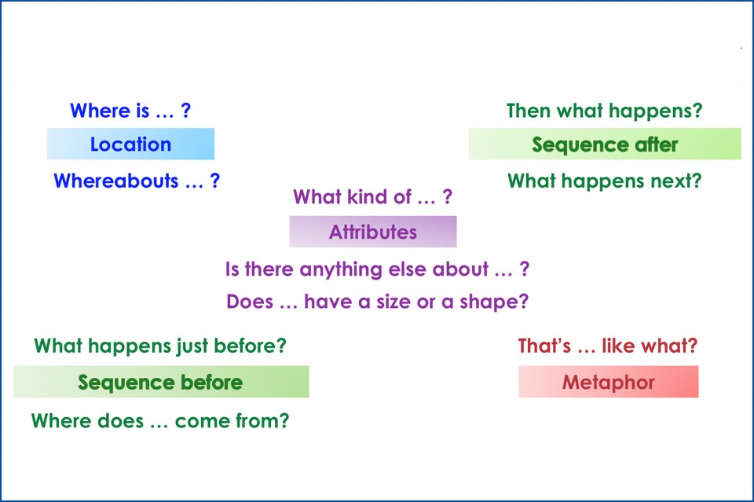

How to facilitate meaningful conversations
Problem / Opportunity
You joined a new team or organization and have one-on-ones with 25 people in 10 days. How do you connect with people, build trust, and learn about their world? How do you achieve that in 30-minute conversations?
Solution
Create a psychologically safe environment by using a technique called Clean Language. When the other person shares something that you want to learn more about, ask a question in a way that allows them to use their own vocabulary and metaphors.
Example for a clean conversation
Let's see an example of using Clean Language techniques in conversations.
You: What challenges are important for the team?
Them: the team needs a testing environment.
Non-clean answer: What kind of software do you need? (don't use words the person didn't use. Let them come up with the vocabulary).
Clean answer: What kind of testing environment?
Them: my head explodes when I try to test our services together with it's dependent services.
Non-clean answer: does it frustrate you? (don't guess their emotions, let them share their world in their own language and metaphors).
Clean answer: and then what happened?
Them: Last week we had a production outage that impacted our customer and our testing environment didn't detect that.
What is Clean Language?
Communication methodology that was Developed in the 80' by David Grove, a psychologist. The idea is to remove biases from a conversation by not using your own language and metaphors.
Use the following questions, depends on where you want to focus the conversation on:
